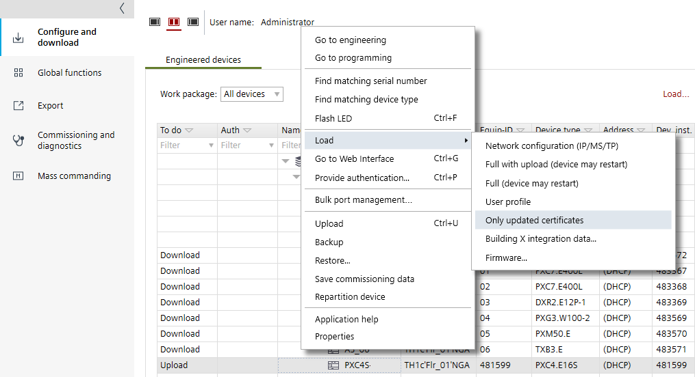

将更新的证书下载到设备
此过程描述如何更新所选设备中的操作证书或根证书：
- Web
Renewing web internal operational certificate - BACnet/SC
Renewing BACnet/SC internal operational certificate
BACnet/SC certification management in the projects - IEEE802.1X
Renewing the IEEE 802.1X internal operational certificate

Download a certificate to a device
- A device is connected and discovered.
- A full download with an operational certificate is already performed.
- Open the Startup > Configure and download task.
- In the Engineered devices tab, right-click a device that matches a discovered device.
- Select Load and than Only updated certificates.
- You have downloaded and updated an operational or root certificate to a device.